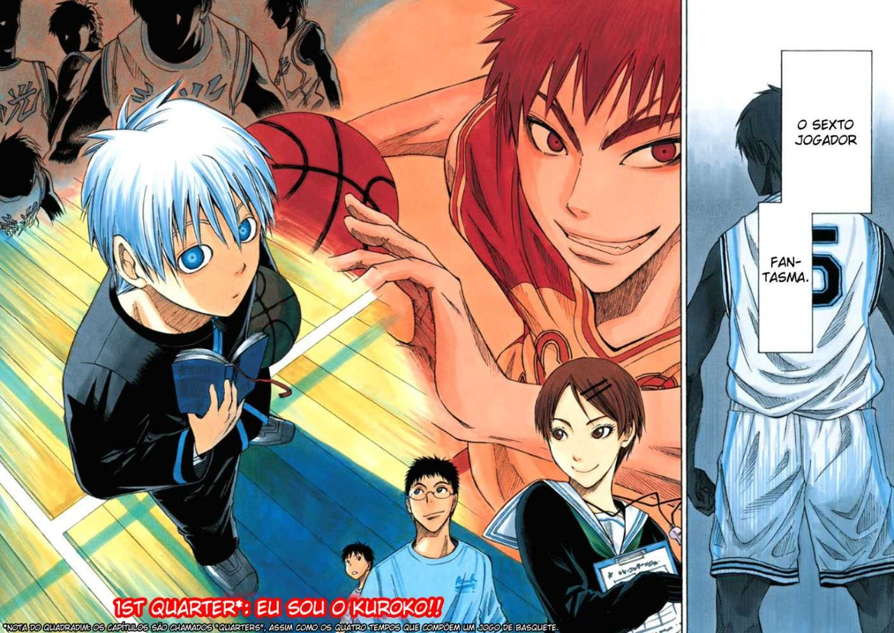
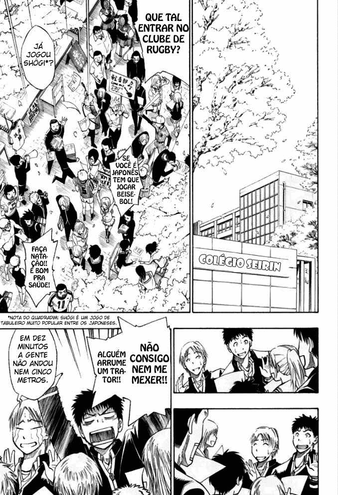
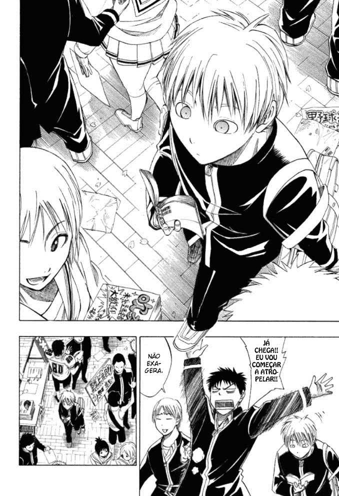
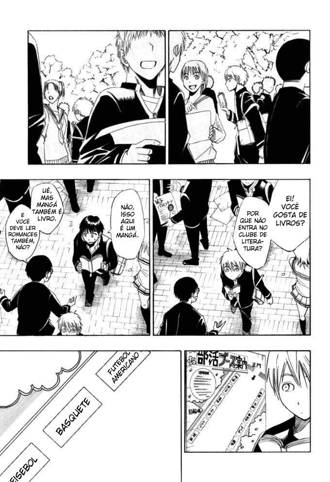
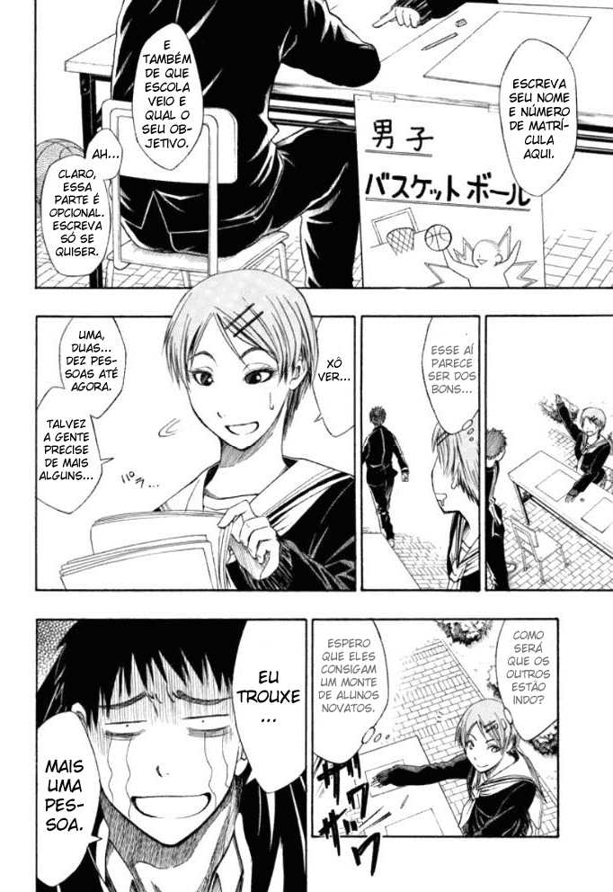

JonyPink
13/07/22
Esportes
Manga: Kuroko no Basket
Sinopse: Kuroko no Basket acompanha as aventuras de Tetsuya Kuroko, um jovem de 16 anos que, sob a aparência normal, esconde um formidável jogador de basquete. Ele costumava estudar no Colégio Teiko, cujo time fez história em quadra ao ganhar três temporadas consecutivas, recebendo o apelido de "Geração dos Milagres"
Algumas imagens do manga↓
    